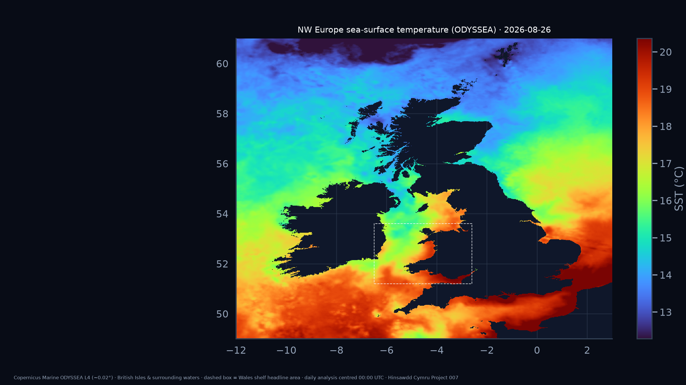
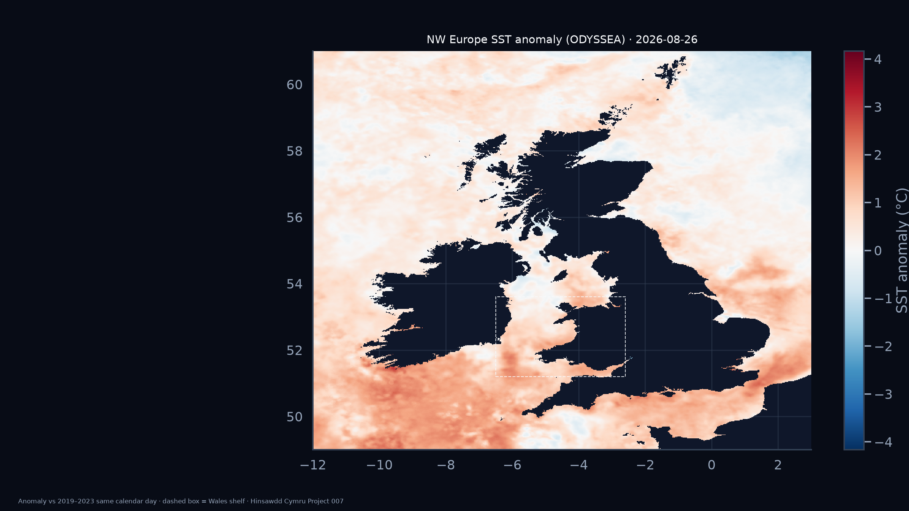
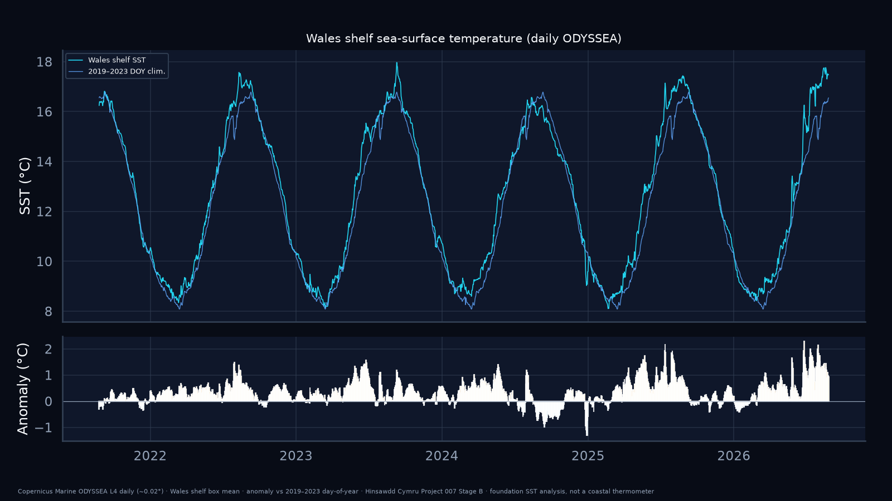
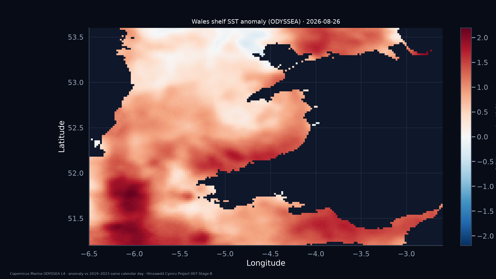
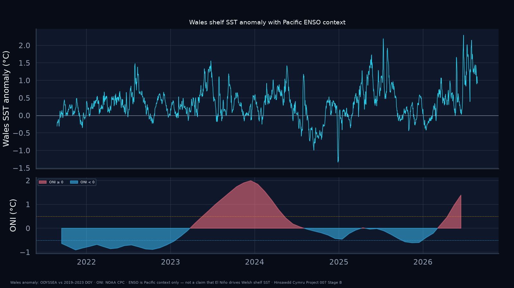

NW Europe — sea-surface temperature
- What
- Latest-day foundation SST on the Copernicus ODYSSEA ~0.02° grid.
- Where
- Ireland, Great Britain, Isle of Man and surrounding shelf seas (lon −12°…3°, lat 49°…61°).
- How to read
- Colour = absolute ocean temperature (°C). Dark areas = land or no ocean mask. The dashed white box marks the Wales shelf window used for the headline time series. Use this map to see regional context — e.g. how warm the Irish Sea and Celtic Sea are relative to each other.

NW Europe — SST anomaly
- What
- Same calendar day, expressed as a departure from the 2019–2023 climatology for that day-of-year.
- Where
- Same regional window as above.
- How to read
- Red = warmer than the short baseline; blue = cooler. Shows whether unusual warmth is confined to Wales or part of a wider NE Atlantic shelf pattern. Not comparable to HadISST 1991–2020 anomalies (different baseline and product).

Wales shelf — daily history
- What
- Area-mean daily SST over the Wales shelf box (cosine-latitude weighted ocean cells).
- Where
- lon −6.5°…−2.6°, lat 51.2°…53.6° — Welsh coastal / shelf seas only.
- How to read
- Top: cyan = observed daily SST; blue = 2019–2023 day-of-year normal. Bottom: anomaly bars (warm orange / cool blue). This panel drives the headline numbers at the top of the page.

Wales shelf — anomaly map (detail)
- What
- Full-resolution anomaly field inside the Wales shelf box.
- Where
- Same as the dashed box on the regional maps.
- How to read
- Shelf-scale spatial detail at native ~0.02° resolution. Use when you need local patterns (e.g. Bristol Channel vs open Cardigan Bay tendency) that are averaged out in the headline series.

Pacific ENSO context (not Wales causation)
- What
- Wales shelf SST anomaly with NOAA Oceanic Niño Index (ONI) below.
- Where
- Wales anomaly (top); equatorial Pacific ONI (bottom).
- How to read
- ONI describes Pacific ENSO state only. Project 007 does not claim El Niño directly warms Welsh shelf seas — this panel is observational context while both signals evolve.
